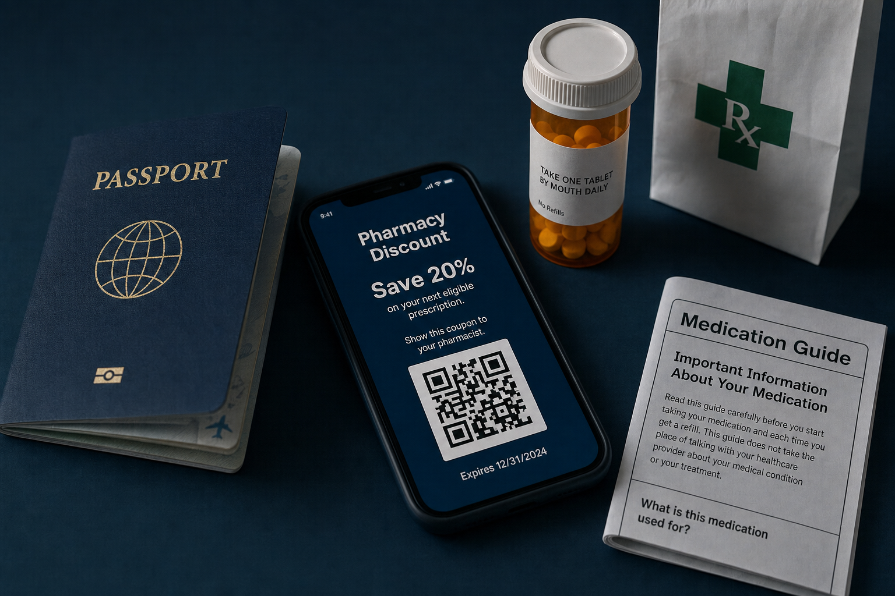

Key Takeaways
- US pharmacies accept any government-issued photo ID at pickup. Passport, Aadhaar, INE, national ID card, foreign driver's license all work. Workplace badges and student IDs do not count.[1]
- A prescription from a doctor in the home country cannot be filled at a US pharmacy. The prescription must come from a US-licensed clinician who is licensed in the state where the pharmacy is located.[2]
- No Social Security number is required to fill a prescription at a US pharmacy or to use free discount cards. GoodRx, SingleCare, and ScriptSave WellRx are all free and neither states an SSN or residency requirement.[3][4]
- Discount cards can beat cash-pay by 50% to 80% on generic medications, but they cannot be combined with insurance and must be shown before the prescription is processed at the counter.[4]
- Manufacturer patient assistance programs (Lilly Cares, Pfizer RxPathways, Sanofi Patient Connection) are generally limited to qualifying US patients. Most are not accessible to international visitors on short trips.[5]
- Under HIPAA at 45 CFR 164.502(g), an adult child can act as a personal representative for a parent only with written authorization or applicable state legal authority, so verify the platform's proxy consent form is signed before booking on a parent's behalf.[6]
- US pharmacists are required by federal law (OBRA '90, extended by 46 state boards) to offer counseling on every new prescription. Take the counseling; it is included in the cost.[7]

1. ID Accepted at US Pharmacies
US pharmacies require a photo ID at pickup for one reason: the pharmacist has to verify that the person picking up the medication is the one named on the prescription. That verification requirement applies to every prescription, insured or cash-pay, controlled or non-controlled. It is not a citizenship check.
Any government-issued photo ID satisfies this requirement. The pharmacy staff will read the name on the prescription and compare it against the name on the ID.[1] The ID does not need to be a US ID.
| ID type | Accepted at US pharmacy? | Notes |
|---|---|---|
| Passport (any country) | Yes | Universally accepted; the strongest ID a visitor can carry. Bring the physical passport, not a photocopy. |
| Aadhaar Card (India) | Yes, as government-issued photo ID | Physical card or PVC card, not a digital screenshot. Pharmacy staff may not know what it is, so mention it is India's national identity card. |
| INE / Voter ID (Mexico) | Yes, as government-issued photo ID | Physical Credencial para Votar issued by INE. Widely recognized in border states. |
| National ID card (EU, UK residency permit, other) | Yes | Any national photo ID issued by a home government works. Bring both the card and the passport when possible. |
| Foreign driver's license | Yes, as government-issued photo ID | A valid home-country driver's license counts. An International Driving Permit alone does not; it must accompany the underlying license. |
| US state driver's license or ID card | Yes | Not required. Visitors do not need a US ID. |
| Workplace or employer ID badge | No | Not accepted for prescription pickup. Also not accepted by TeleDirectMD for platform sign-up. |
| University or student ID | No | Not accepted. International students should present a passport instead. |
| Consular card (matrícula consular) | Varies by state and pharmacy chain | Accepted at many pharmacies in border and Southwestern states; not universal. Carry a passport as a backup. |
For DEA-controlled substances (Schedule II through V), the pharmacist may ask additional questions and, in many states, will record the ID number in a state prescription drug monitoring database. This is normal. A foreign passport number is fine; the pharmacist enters what is on the ID.[8]
2. Country-Specific ID: What Aadhaar, INE, and National IDs Do and Don't Do
Home-country IDs are valid for the pharmacy counter but they do not substitute for the things a US-issued ID would do. Understanding this distinction saves visitors a lot of confusion.
What foreign IDs DO at a US pharmacy
- Prove identity at prescription pickup
- Match the name on the prescription to a real person
- Satisfy state controlled-substance ID recording requirements
- Serve as the ID field on manufacturer coupon paperwork (for the rare programs open to non-US-residents)
What foreign IDs DO NOT do
- Enroll a visitor in a US insurance plan (visitors are not eligible)
- Qualify a visitor for Medicare or Medicaid (both require lawful status and other criteria)
- Qualify a visitor for manufacturer patient assistance programs that require US residency
- Serve as a Social Security number (there is no such thing on a foreign ID)
The Aadhaar-specific question comes up often, so it is worth addressing directly: an Aadhaar card is India's national identity document issued by the Unique Identification Authority of India. It contains a 12-digit Aadhaar number and biometric data.[9] At a US pharmacy counter, it is treated exactly like any other national ID card, meaning the pharmacist looks at the photo and name and moves on. The 12-digit Aadhaar number itself has no meaning in the US system.
Same for Mexico's INE Credencial para Votar. It is a government-issued photo ID, recognized as such at US pharmacies. The 18-character CURP number on it is meaningful only in Mexican systems.[10]
3. Booking on Behalf of a Visiting Parent: HIPAA and Proxy Consent
Adult children of visiting parents often manage the logistics: they book the telehealth visit, sit in on the call to interpret, and pick up the medication. All of that is allowed, but the rules are specific.
Under the HIPAA Privacy Rule at 45 CFR 164.502(g), an adult child can access a parent's protected health information (PHI) only if they are a personal representative, meaning they have legal authority under state law to make health care decisions on the parent's behalf. Without that legal authority, an adult child is treated as a family member "involved in the individual's health care" under 45 CFR 164.510(b), which allows the clinician to share information relevant to that involvement only with the patient's verbal or written agreement.[6]
In practice, for a visiting adult parent who is fully competent, the workflow is:
- The parent signs a proxy consent form or authorization allowing the adult child to receive health information and communicate with the clinician on the parent's behalf.
- The parent is present on the telehealth call, either speaking or listening with the child interpreting.
- The prescription is written in the parent's name.
- The parent, or a designated agent listed on the pharmacy's authorized-pickup form, picks up the medication.
Most US pharmacies will release a prescription to a family member who presents their own government-issued ID and the patient's name, especially for non-controlled medications. For Schedule II controlled substances, some chains require the patient in person or a written agent authorization. Call the pharmacy ahead if the parent has mobility issues.
4. The Pharmacy Pickup Workflow, Step by Step
This is the workflow at a typical US pharmacy chain (CVS, Walgreens, Walmart, Costco, Rite Aid) for a new prescription sent electronically from a telehealth clinician:
- The clinician sends the prescription electronically. The visitor does not carry a paper Rx; it is transmitted from the clinician's software to the pharmacy while the visit is happening.
- The pharmacy receives it, usually within minutes. The visitor gets a text or call when it is ready, or can call the pharmacy in about 30 minutes to confirm.
- Arrive at the pharmacy counter. Not the front cashier; the pharmacy counter, which is usually at the back of the store or a separate drive-through window.
- Say "I'm picking up a prescription for [full name] with date of birth [MM/DD/YYYY]." Give the patient's full name as it appears on the passport or ID, not a shortened name.
- Show the government-issued ID. The pharmacy staff will compare it against the prescription record.
- Give the discount card, if using one, BEFORE payment is calculated. This is the single most missed step by visitors. Once the pharmacy runs the prescription without a coupon, you may be quoted the full cash price. If a coupon is offered after that, some pharmacies will not re-run the transaction. Always volunteer the discount card first.
- Pay. Credit card, debit card, or cash. Foreign credit cards work at almost all US pharmacy chains.
- Accept the pharmacist counseling. The pharmacist is required to offer counseling on new prescriptions.[7] Take five minutes. Ask what the medicine is for, how to take it, what to avoid, and what side effects to watch for.
- Verify the label. Before leaving the counter, check the name on the label, the drug name, dose, and instructions. Errors are rare but cheap to catch here.
Typical wait time for a first-fill new prescription is 15 to 45 minutes at busy times, less at off-peak hours (mid-morning weekdays are fastest). Refills are often ready in 5 to 15 minutes.
5. Pharmacy Chain Map: CVS, Walgreens, Costco, Walmart, and the Rest
US pharmacies come in several formats. Knowing what to expect makes the visit less stressful.
| Chain | Format | What's helpful for a visitor |
|---|---|---|
| CVS Pharmacy | Inside CVS retail stores; also in Target stores as "CVS Pharmacy at Target" | Extremely widespread. Pharmacy counter usually at the back of the store. Many locations offer 24-hour service in urban areas. Drive-through at many suburban locations. |
| Walgreens | Freestanding stores | Comparable footprint to CVS. Many 24-hour locations. Drive-through common. Accepts most major discount cards. |
| Walmart Pharmacy | Inside Walmart Supercenters | Often cheaper for cash-pay on generics. Walmart's $4 Generic Prescriptions program lists hundreds of common generics at $4 for a 30-day supply.[11] Not universal for all generics; ask before assuming. |
| Costco Pharmacy | Inside Costco warehouses | Frequently the cheapest cash-pay for brand and specialty generics. You do not need a Costco membership to use the pharmacy. Federal and state pharmacy laws prohibit membership requirements for prescription services.[12] Enter the warehouse and tell the greeter you are going to the pharmacy. |
| Rite Aid | Freestanding stores | East Coast and West Coast concentration. Standard chain format. |
| Kroger, HEB, Publix, Meijer, Wegmans | Inside supermarket chains | Regional. Kroger family (also Ralphs, King Soopers, Fry's, Fred Meyer) is nationwide. HEB is Texas. Publix is the Southeast US. Meijer is Midwest. Wegmans is Northeast US. |
| Amazon Pharmacy | Online, mail delivery | Deliveries take 2 to 5 business days.[13] Requires a US shipping address, so a hotel or family member's address works. Not useful for same-day pickup. |
| Independent pharmacies | Neighborhood, freestanding | Often more personalized service, sometimes better cash prices. Look for the green "Rx" cross sign. Common in ethnic neighborhoods, often with staff who speak the local language. |
Drive-through pharmacies are common in suburban locations, particularly at Walgreens and CVS. They work like a bank drive-through: pull up, speak through the intercom, hand over the ID, receive the medication in a plastic tray. Convenient if the visitor has mobility issues.
6. Prescription Discount Cards: Which Ones, and How to Use Them
US retail prescription prices are unusually high compared to almost every other country. But the retail price is not what most patients actually pay. Discount cards, all free, cut cash-pay prices by 50% to 80% on generic medications and by 10% to 40% on many brand drugs.[4]
None of these require US residency, insurance, or a Social Security number:
| Card | How to use | Best for | Where to sign up |
|---|---|---|---|
| GoodRx | Show coupon (paper printout, digital PDF, or GoodRx app screen) to pharmacy staff before they process the prescription. The pharmacy enters the BIN, PCN, and Group numbers from the coupon. | Widest brand and generic coverage. Frequently the best available price for popular chronic-condition generics. | goodrx.com (free, no SSN required)[3] |
| SingleCare | Same workflow as GoodRx: show coupon before processing. Free coupons for thousands of drugs. Cannot be combined with insurance.[14] | Often beats GoodRx on generic diabetes and antidepressant medications. Worth comparing side by side. | singlecare.com (free) |
| ScriptSave WellRx | Show card or app. Accepted at 65,000+ US pharmacies. Free account signup.[4] | Independent pharmacies and smaller chains where GoodRx may not be as strong. Includes all brand and generic medications. | wellrx.com (free) |
| Mark Cuban Cost Plus Drugs | Online-only. Requires a prescription from a US-based provider sent directly to Cost Plus's partner pharmacy. Ships to a US address.[15] | Exceptional prices on generic chronic-condition drugs (blood pressure, cholesterol, diabetes oral medications). Transparent pricing: cost + 15% markup + $5 dispensing fee. | costplusdrugs.com |
| Amazon Pharmacy | Prescription sent to Amazon; delivered by mail in 2 to 5 business days.[13] Free Prime savings on many medications. | Not urgent needs. Best for refills once the visitor is settled at an address for at least a week. | pharmacy.amazon.com |
| Walmart $4 Generic Program | No enrollment. Ask the Walmart pharmacist if the medication is on the $4 list.[11] | Common cardiovascular, diabetes, and antibiotic generics at $4 for 30 days. | Walmart Pharmacy (in-store) |
The workflow tip that matters most: compare prices before showing up. Both GoodRx and SingleCare let you enter the drug name, dose, quantity, and ZIP code to see the price at nearby pharmacies. It is common to see a $50 spread between two chains on the same block. Do this comparison from a phone before choosing a pharmacy.
7. Manufacturer Patient Assistance for Expensive Prescriptions
For expensive brand medications (insulin, GLP-1 agonists, biologics, some inhalers, specialty drugs), manufacturer patient assistance programs (PAPs) can provide the medication free or heavily discounted. The catch: most PAPs are restricted to qualifying US patients. A visitor on a 3-week trip is generally not eligible.[5]
| Program | Drugs covered | Visitor eligibility | Program link |
|---|---|---|---|
| Lilly Cares | Insulin (Humalog, Humulin), Trulicity, Mounjaro (some indications), Zyprexa, and others | Restricted to "qualifying US patients" with financial need. Not designed for visitors on short trips.[16] | lillycares.com |
| Lilly Insulin Value Program | All Lilly insulins (Humalog, Humulin, Basaglar) at $35/month cap | Available to anyone with a US prescription, including uninsured. Accessible to visitors with a US telehealth prescription.[17] | insulins.lilly.com |
| Pfizer RxPathways | Selected Pfizer brand medications | Requires US patient status and application review.[18] Not accessible for short-trip visitors. | pfizerrxpathways.com |
| Sanofi Patient Connection | Sanofi insulins (Lantus, Toujeo), Praluent, and others | Requires selecting a US state on the application. Not accessible for visitors.[19] | sanofipatientconnection.com |
| Novo Nordisk Patient Assistance Program | Novo insulins (NovoLog, Levemir, Tresiba), Ozempic (some indications), Wegovy | US-resident financial need application required. Not accessible for short-trip visitors.[20] | novocare.com |
| Sanofi Insulins Valyou Savings Program | All Sanofi insulins (Lantus, Toujeo, Admelog, Apidra) at $35/month cap (effective January 1, 2026) | Available to all US patients with a valid prescription. Accessible to visitors with a US telehealth prescription.[21] | Sanofi press release |
The important distinction is PAP versus manufacturer coupon. PAPs are financial-hardship programs for uninsured US patients (long applications, income verification). Manufacturer coupons or savings programs like Lilly's $35 insulin and Sanofi's Valyou are open to any patient with a US prescription. Visitors can and should use the coupons; PAPs are generally out of reach.
8. Community Options: 340B Health Centers and Sliding-Scale Clinics
Federally Qualified Health Centers (FQHCs) participate in the 340B Drug Pricing Program, which lets covered entities purchase outpatient drugs at significant discounts.[22] Many FQHCs pass these savings on to patients through in-house pharmacies, with sliding-scale fees based on income.
Two features make this relevant for visitors:
- FQHCs generally treat patients regardless of insurance status or immigration status. They will not turn a visiting parent away.
- Sliding-scale fees mean the cost is based on stated income. Visitors typically don't have US income documentation, and many FQHCs will use self-declared income for a first visit.
The tradeoff is that FQHCs are usually in-person, not telehealth. For a visitor already using TeleDirectMD for the visit, an FQHC in-house pharmacy is not typically the fill point. But for a visitor who develops a more complex issue and needs in-person care, an FQHC is the right referral.
Find an FQHC via HRSA's Find a Health Center tool. Enter the ZIP code where the visitor is staying.
9. When Cash Pay at a US Pharmacy Is Genuinely Cheaper
The default assumption for many visitors is that US medication prices are always higher than home-country prices. That is often true for insulin, some brand injectables, and specialty drugs, but there are important exceptions where a US cash-pay price with a discount card beats a home-country retail price.
Situations where US cash pay tends to be cheaper:
- Common generic medications with Walmart $4 or Cost Plus Drugs pricing. Metformin, lisinopril, atorvastatin, amlodipine, hydrochlorothiazide, sertraline, and dozens more come in at $4 to $10 for 30 days. That undercuts most non-subsidized retail pharmacies in India, Latin America, and much of Southeast Asia.[15]
- Generic short-course antibiotics. Azithromycin 5-day, cephalexin 7-day, and similar are usually under $15 with a discount card.
- Some brand-name inhalers at the manufacturer coupon price. Advair Diskus, Symbicort, and Trelegy have periodic $10 to $25 coupons, which can beat certain international retail prices.
Situations where US cash pay is not cheaper:
- Brand insulin without the $35 cap coupon
- Most brand-name cardiovascular medications when a subsidized formulary exists in the home country
- Any medication that is over-the-counter in the home country but prescription-only in the US (fluticasone nasal spray was OTC in many countries before it became OTC in the US)
The practical answer for visitors: check GoodRx or SingleCare from a phone before assuming home-country pharmacy will always win. On common generics, a US pickup with a coupon is often the cheaper choice.
10. Red Flags: Fake Sites, Sketchy Discount Cards, and Common Visitor Scams
The FDA and NABP maintain warning lists about fraudulent online pharmacies targeting US patients, and visitors are particularly vulnerable because they are searching without local context.[23] Warning signs:
- An online pharmacy that offers prescription drugs without requiring a prescription. Legitimate US pharmacies always require a valid prescription from a US-licensed clinician.
- Websites that ship prescriptions internationally to the US without US pharmacy licensure. The vast majority are unlicensed and illegal.
- Discount cards charging enrollment or monthly fees. GoodRx, SingleCare, WellRx, and Cost Plus are all free. Any card asking for payment upfront is a red flag.
- Discount cards asking for a Social Security number for enrollment. None of the legitimate discount cards require an SSN. If asked, walk away.
- Anyone at a pharmacy or on the phone asking for a bank account number, wire transfer, or gift card for a prescription. This is a scam.
- "International pharmacy" ads on social media offering "the same medicines cheaper." These are almost always either counterfeit product or unlicensed cross-border shipment.
The NABP's Safe Pharmacy website lists verified legitimate online pharmacies. If in doubt, verify the pharmacy against that list.
11. Get the Free Counseling: It's Required by Law
The Omnibus Budget Reconciliation Act of 1990 (OBRA '90) requires US pharmacists to offer counseling on prescriptions. The federal requirement originated for Medicaid, but has been extended by 46 state boards of pharmacy to apply to all patients.[7] This is a free service. It is not optional for the pharmacist to offer; it is optional for the patient to accept.
What the pharmacist is required to be prepared to discuss on a new prescription:
- Name and description of the drug
- Intended use and expected action
- Route of administration, dosage form, and dosing schedule
- Common side effects and how to avoid or manage them
- Proper storage
- Drug-drug, drug-food, and drug-disease interactions
- Refill information
- Action if a dose is missed
For a visitor unfamiliar with US medication systems, ask specifically:
- "What is this medicine for?"
- "How and when should I take it?"
- "What foods, drinks, or other medicines should I avoid?"
- "What side effects should I watch for, and when should I stop the medicine and get help?"
- "Is it safe to take with the medicines I brought from home?" (Bring a list of home medicines, with generic names.)
Most US pharmacies have private consultation windows or areas. If the visitor prefers Spanish, Mandarin, Hindi, or another language, ask; larger chains have language-line access.
12. The Visitor Pharmacy Checklist
Before the pharmacy visit:
- Confirm the prescription was sent by the US clinician (get confirmation from the telehealth visit).
- Have the patient's passport or government-issued photo ID.
- Compare prices at 2 or 3 nearby pharmacies using GoodRx or SingleCare.
- Print or save the coupon on a phone.
- Have a list of the patient's current home-country medications with generic names.
At the pharmacy counter:
- Give the patient's full name and date of birth as they appear on the passport.
- Show the government-issued ID.
- Show the discount coupon before the pharmacy processes the transaction.
- Ask for the pharmacist counseling.
- Verify the label at the counter before leaving.
If problems arise:
- If the pharmacy refuses to accept a foreign ID, politely ask for the pharmacy manager or call another location. Any government-issued photo ID satisfies the identity verification requirement.
- If quoted an unusually high price, ask "what's the price with a GoodRx coupon?" and show the coupon.
- If the prescription is not on file, call the telehealth clinician; e-prescriptions occasionally route to the wrong pharmacy branch.
Frequently Asked Questions
Yes. US pharmacies accept any government-issued photo ID at pickup. That includes India's Aadhaar Card, Mexico's INE Credencial para Votar, and any other foreign national photo ID. A passport works as a backup. Workplace and student IDs are not accepted.[1]
No. No SSN is required to pick up a prescription at a US pharmacy, and no SSN is required to enroll in free discount cards (GoodRx, SingleCare, ScriptSave WellRx). If a card demands an SSN, it is likely a scam.
Yes, at most US pharmacies for non-controlled medications, if the parent has authorized the child on the pharmacy's pickup form or the pharmacy staff is satisfied by the family relationship. For controlled substances (Schedule II like ADHD medications, Schedule III to V like most anxiety medications), some chains require the patient in person or a written agent authorization. Call ahead if the parent has mobility issues.
Yes, when the parent has consented. Under HIPAA (45 CFR 164.502(g) and 164.510(b)), an adult child can either be a formal personal representative with legal authority under state law, or a family member "involved in the individual's health care" with the patient's agreement. For visiting adult parents who are competent, sign the proxy consent form and have the parent join the first telehealth call.
It depends on the drug. GoodRx has the widest coverage and is the safest first check. SingleCare often beats GoodRx on generic diabetes and antidepressant medications. ScriptSave WellRx is competitive at independent pharmacies. Mark Cuban Cost Plus Drugs is often the cheapest on chronic-condition generics but is mail-order only. Compare all three coupon services for the specific drug and dose.
No. Federal and state pharmacy laws prohibit membership requirements for prescription services. Enter the warehouse, tell the greeter you are going to the pharmacy, and go straight to the pharmacy counter. Costco Pharmacy is frequently the cheapest cash-pay option for many drugs.
Yes, if the visitor will be at a US address (hotel, family member's home, short-term rental) for at least a week. Amazon Pharmacy delivers by mail in 2 to 5 business days. Not useful for same-day pickup.
Mostly no. Programs like Lilly Cares, Pfizer RxPathways, and Sanofi Patient Connection require qualifying US patient status. However, insulin savings programs (Lilly Insulin Value Program, Sanofi Valyou) that cap monthly cost at $35 are open to any patient with a US prescription and are visitor-accessible.
Yes. Under the Omnibus Budget Reconciliation Act of 1990 (OBRA '90) and 46 state pharmacy board regulations, US pharmacists are required to offer counseling on every new prescription. This is free and included in the visit. Take five minutes and ask about the drug's use, dosing, side effects, and interactions.[7]
This should not happen and is not consistent with standard pharmacy practice. Ask for the pharmacy manager. If they still refuse, contact another pharmacy or use a chain known to be more used to international visitors (CVS and Walgreens in tourist areas, urban Costco pharmacies, or a pharmacy near a large hospital). Any government-issued photo ID, including a foreign passport, satisfies the identity verification requirement.
References
- National Association of Boards of Pharmacy. Practice Standards and Enforcement. Guidance on pharmacist prescription verification requirements. Available at https://nabp.pharmacy/programs/accreditations-inspections/.
- US Drug Enforcement Administration, Diversion Control Division. Pharmacist's Manual (2020 edition, DEA-DC-046R1). Federal controlled substance dispensing requirements. Available at https://www.deadiversion.usdoj.gov/GDP/(DEA-DC-046R1)(EO-DEA154R1)_Pharmacist's_Manual_DEA.pdf.
- GoodRx. Prescription discount and savings platform. Program information. Available at https://www.goodrx.com/.
- ScriptSave WellRx. Prescription discount card program. Program information and pharmacy network. Available at https://www.wellrx.com/.
- Lilly Cares Foundation. Patient assistance program eligibility criteria. Available at https://www.lillycares.com/.
- US Department of Health and Human Services. HIPAA Privacy Rule and Personal Representatives. 45 CFR 164.502(g). Available at https://www.hhs.gov/hipaa/for-professionals/privacy/guidance/personal-representatives/index.html.
- Bailey SC, Sarkar U, Chen AH, et al. Using Single-Item Health Literacy Screening Questions to Identify Patients Who Read Written Medicine Information Provided at Pharmacies. Discussion of OBRA '90 patient counseling requirements and state extensions. Available at https://pmc.ncbi.nlm.nih.gov/articles/PMC11798562/.
- US Drug Enforcement Administration. Controlled substance scheduling and pharmacy dispensing requirements. Available at https://www.dea.gov/drug-information/drug-scheduling.
- Unique Identification Authority of India. About Aadhaar. Government of India. Available at https://uidai.gov.in/en/my-aadhaar/about-your-aadhaar.html.
- Instituto Nacional Electoral (Mexico). Credencial para Votar. Official information page. Available at https://www.ine.mx/credencial/.
- Walmart. Retail prescription program: $4 generic drug list. Available at https://www.walmart.com/cp/4-prescriptions/1078664.
- Costco Wholesale customer service. Official policy: pharmacy is accessible to non-members without a Costco membership. Available at https://customerservice.costco.com/app/answers/detail/a_id/796/~/do-i-need-a-membership-to-purchase-prescription-drugs.
- Amazon Pharmacy. Online prescription delivery service information. Available at https://pharmacy.amazon.com/.
- SingleCare. Prescription discount coupon service. Available at https://www.singlecare.com/.
- Mark Cuban Cost Plus Drug Company (Cost Plus Drugs). Transparent-pricing pharmacy. Available at https://costplusdrugs.com/.
- Lilly Cares Foundation. Patient assistance program details. Available at https://www.lillycares.com/.
- Eli Lilly and Company. Lilly Insulin Value Program: $35 monthly cap for Lilly insulins for insured and uninsured US patients. Available at https://insulins.lilly.com/lilly-insulin-value-program.
- Pfizer Inc. Pfizer RxPathways patient assistance program information. Available at https://www.pfizerrxpathways.com/.
- Sanofi. Sanofi Patient Connection patient assistance program information. Available at https://www.sanofipatientconnection.com/.
- Novo Nordisk. NovoCare Patient Assistance Program information. Available at https://www.novocare.com/.
- Sanofi US. Insulins Valyou Savings Program expansion press release (September 2025): $35 monthly cap for all Sanofi insulins, effective January 1, 2026, for all US patients with a valid prescription. Available at https://www.news.sanofi.us/2025-09-26-Sanofi-expands-patient-affordability-program-by-offering-access-to-all-its-insulins-for-35-per-month-in-the-US.
- US Health Resources and Services Administration. 340B Drug Pricing Program overview. Available at https://www.hrsa.gov/opa.
- US Food and Drug Administration. BeSafeRx: Your Source for Online Pharmacy Information. Available at https://www.fda.gov/drugs/quick-tips-buying-medicines-over-internet/besaferx-your-source-online-pharmacy-information.